Tópico 3: Rotina e Hábitos; Alimentação e Lista de Supermercado; Vestuário
1.1 A day on campus
Rosa já se acostumou com a rotina e as obrigações da vida acadêmica e está cada vez mais adaptada ao ambiente da Columbus College of Chicago. Em uma das manhãs em que foi ao campus, Rosa encontrou-se por acaso com Christine. Acompanhe o momento da conversa em que isso acontece:
Christine: Oh, hi Rosa! How are you?
Rosa: I’m fine, and you?
Christiane: I’m okay.
Rosa: What are you doing here? I thought you didn’t have to go to college anymore.
Christine: I do volunteer work for the college paper, so I need to come here once in a while.
Rosa: Really? I noticed it’s very common for Americans to do volunteer work during their college years.
Christine: It is! It’s a cultural tradition.
Rosa: Yes, and yesterday Betsy invited me to do volunteer work at the International Student’s Center. She goes there on Thursday afternoons.
Christine: That’s great! But what about you? Isn’t today your day off?
Rosa: I don’t have to attend any classes today, but I need to do research for a Physics paper... Are you going to the library?
Christine: Yeah, let’s go together.
Rosa: Sure.
Nesta conversa, Rosa e Christine mencionam alguns de seus compromissos relativos à vida acadêmica. Rosa precisa fazer uma pesquisa para escrever um Physics paper enquanto Chris deve terminar um trabalho voluntário para o college paper.
Estes são apenas alguns exemplos de atividades que college students normalmente realizam. No tópico a seguir você estudará outras college activities.
1.2 Getting the hang of it
Cansada de esperar por Christine, Rosa decidiu ir para casa. No caminho, ela encontra Victor e eles começam a conversar sobre suas obrigações para aquele dia. O garoto está cursando Med School e está muito empolgado com seu futuro profissional. Acompanhe a conversa entre os dois:
Rosa: Hi, Victor! How are you?
Victor: Hey, Rosa! I’m fine, thanks! Well, a little busy, but fine.
Rosa: Busy? Why?
Victor: Well, today I have to register for a new class. As the line at the Admission and Registration office is quite short right now, I’ll take advantage of it because I need to hand in two written assignments this afternoon!
Rosa: Wow, that’s tough! I don’t have to do much today. On Wednesdays I always have to attend two classes in the afternoon and sometimes I have to take books back to the library in the morning, but today I don’t need to - I took the books back yesterday. I’m here just to enjoy the campus grounds. I hardly ever have time to do that! Just once or twice a month.
Victor: Don’t you have to do some research for that Physics paper?
Rosa: Oh, my! Yes, I do! I have to continue looking for the articles. I need to read immediately! Well, so now I have to go back to the library anyway.
Victor: OK. Let’s walk together. The library and the Admission and Registration office are on the way.
Rosa: Yeah, let’s go.
Victor: Oh, and by the way, what about tomorrow afternoon? Do you have any plans?
Rosa: Hummm...no, not really. I think I don’t have to do anything in special. Why?
Victor: I usually do volunteer work at the International Students’ Center on Thursday afternoons. Why don’t you join me? It’s a really nice experience to meet people from other cultures.
Rosa: Great! Carly also invited me to join her there. It’s nice to have you there too! That sounds really cool! Sure, count me in!
No diálogo é possível identificar algumas atividades que os estudantes desenvolvem na College. Mas existem ainda muitas outras atividades realizadas neste meio. Acompanhe algumas no tópico a seguir.
1.3 College activities
Veja alguns verbos relacionados ao ambiente acadêmico:
 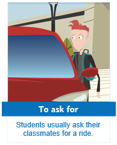
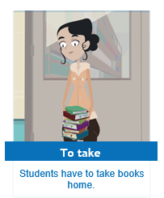
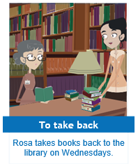
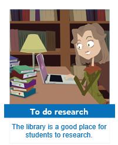
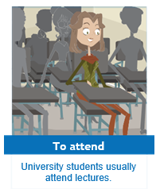
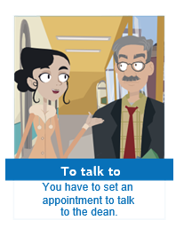
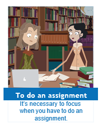
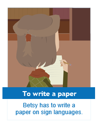
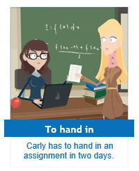
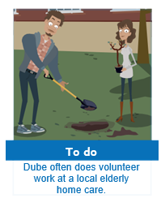
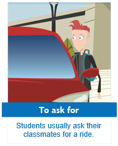
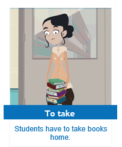
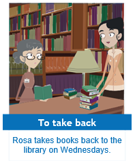
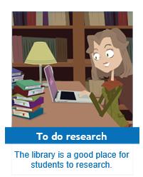
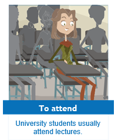
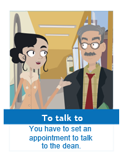
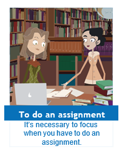
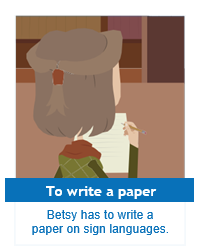
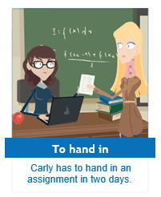
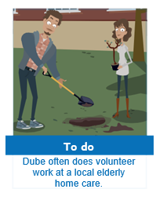
Estas atividades são comuns ao dia a dia de muitos estudantes. Pense em cada uma delas e identifique as que você costuma realizar com mais frequência.
No Present Simple basta utilizar o verbo (sem a partícula to) com o subject pronoun correspondente à pessoa a quem você está se referindo. Se você for falar de você mesmo, usará “I”, mas se, por exemplo, estiver falando de você e de seus colegas, deverá usar we:
I attend classes.
We do assignments.
Essas ações que você acaba de ver são muitas vezes executadas em locais específicos, portanto, observe a seguir os nomes de alguns desses lugares.
1.4 Places on college
A maioria dos ambientes acadêmicos possuem espaços com nomes específicos. Acompanhe a seguir como estes lugares se denominam:
Não podemos esquecer que, para executar as ações das quais se está falando nestes locais, frequentemente precisamos interagir com pessoas que têm funções ou cargos específicos relacionados a eles. Por isso, recorde algumas occupations.
1.5 Faculty and Staff
Acompanhe, então, algumas ocupações de faculty and staff.

Este vocabulário é importante para situações em que você precisa se comunicar com profissionais que atuam em escolas e universidades.
1.6 Review: Present Simple
Você estudou o Present Simple do verbo To have e de outros verbos em inglês. Você pôde verificar que na forma afirmativa, com as pessoas I, you, we e they, basta utilizar o verbo em sua forma no infinitivo sem a partícula to. Observe:
| I usually get books at the library in the morning. |
| You need to do an assignment. |
| We do volunteer work in an NGO. |
| They attend lectures on Friday afternoons. |
Já para os verbos que acompanham he, she e it, acrescenta-se “s” ou “es” em alguns verbos. Veja nos exemplos:
| He does volunteer work in an NGO. | She attends lectures every Wednesday afternoon. |
Os verbos terminados em “y” precedido por consoante têm o “y” substituído por “i”, para então acrescentar “es”. Acompanhe:
| I study English every day. |
| He studies English every day. |
Estes exemplos são de verbos regulares, por terem apenas o acréscimo de “s”, “es” ou “ies”. No caso do verbo To have, esta regra não vale, já que ele é um exemplo de verbo irregular. Veja nas frases:
| I have to set an appointment with my advisor. |
| She has to set an appointment with her advisor. |
Quando se trata da forma negativa, com as pessoas I, you, we e they, é preciso utilizar o auxiliar do junto à partícula not, como você pode ver no exemplo:
| I don’t attend classes every day. |
Já quando utilizamos he, she ou it, acrescentamos does junto à partícula not para formar a frase negativa. Observe:
| He doesn’t attend classes every day. |
Para a forma interrogativa, utiliza-se do antes de I, you, we e they e does antes de he, she e it . Veja os exemplos:
| Do you attend classes every day? | Does he attend classes every day? |
Os auxiliares do e does sempre são utilizados quando fazemos uma pergunta, mesmo que ela inicie com uma question word:
| What classes do you have on Mondays? |
| When does he take his books back to the library? |
E, por fim, os auxiliares aparecem também nas short answers:
| Question | Affirmative | Negative |
|---|---|---|
| Do you attend classes every day? | Yes, I do. | No, I don’t. |
| Does he attend classes every day? | Yes, he does. | No, he doesn’t. |
Esta revisão do Present Simple o auxilia a memorizar o conteúdo. A seguir, você praticará a pronúncia da terminação dos verbos no Present Simple.
1.7 Third person -s
Como você estudou no tópico anterior, os verbos utilizados no Present Simple com a terceira pessoa do singular são acrescidos de três terminações distintas (“s”, “es” ou “ies”), de acordo com o verbo no infinitivo. Isso gera três maneiras diferentes de pronunciar a letra “s” final:
| som de “s” | plays |
| som de “z” | goes |
| som de “iz” | studies |
Qual desses três sons será pronunciado depende de algumas regras, listadas a seguir.
Regra 1: o “s” final é pronunciado igual ao som da letra “s” em português quando o verbo termina com as letras “p”, “t”, “k”, “f” ou “th”.
| stops | blasts | talks | bluffs | unearths |
Regra 2: o “s” final é pronunciado igual ao som das letras “iz”, quando o verbo termina em “ce”, “s”, “ch” , “ge”, “sh”, “ze” ou “x”.
| races | misses | watches | judges | wishes | freezes | fixes |
Regra 3: o “s” final é pronunciado igual ao som da letra “z” em português, quando o verbo termina com qualquer outro som de vogal ou “y”.
| robs | broods | sings | receives | fails | blurs |
| comes | earns | breathes | goes | sees |
Vale lembrar que essas mesmas três regras de pronúncia do “s” final do Present Simple são utilizadas para a pronúncia do plural dos substantivos em língua inglesa. No tópico a seguir você vai revisar os advérbios e expressões de frequência.
1.8 Review: adverbs and expressions of frequency
No diálogo entre Rosa e Victor, ambos utilizam diversas expressões que indicam a frequência com que eles realizam certas atividades. Observe:
| On Wednesdays I always have to attend two classes in the afternoon and sometimes I have to take books back to the library in the morning. |
| I hardly ever have time to do that! I just have time to do that once or twice a month. |
| I usually do volunteer work at the International Students’ Center on Thursday afternoons. |
Você já estudou os adverbs and expressions of frequency anteriormente, e viu que eles normalmente são empregados com o Present Simple e que eles têm uma posição definida dentro das frases em inglês.
Ou seja, os adverbs of frequency são colocados após o sujeito da frase e antes do verbo principal. Entretanto, quando se trata do verbo To be, devemos colocá-los depois (do verbo To be). Observe os exemplos:
Rosa always walks to university. always = adverb e walks = verb
Carlton is never late. is = verb to be e never = adverb
No final de um dia bastante atarefado, Christine chega em casa e conversa com Carly, desabafando:
Christine: Aff… Wednesdays are hardworking! I always work hard from morning till night. I love doing volunteer work, but sometimes I get overloaded.
Carly: I know… I usually see you buzzing around…
Christiane: Yeah, that’s because I sometimes have to finish my articles before Thursday. And I never finish them on time.
Carly: Hahaha, I know, I’m often lazy too! I hardly ever meet the deadline.
Christine: I know... but Rosa is the opposite! She is often organized! She doesn’t usually hand in late assignments. And she is always very excited!
Carly: Yeah, I know. She’s great!
Christine revela a Carly que está admirada com a disposição de Rosa, que doesn’t usually hand in late assignments, often organized, always very excited. Christine, falando sobre si mesma, diria:
| I don’t usually hand in my assignments on time. |
| I am not often organized. |
| I am not always very excited. |
No caso das orações negativas, a regra continua valendo: adverbs of frequency após o verbo To be e antes de outros verbos. Veja:
| I don’t always work hard from morning till night. |
| She doesn’t usually hand in any assignments. |
| I am not always very excited. |
Por fim, lembre-se que, quando você quer dar mais ênfase à frequência com que realiza uma ação, você pode utilizar alguns dos adverbs of frequency (por exemplo, usually, often, frequently e sometimes) no início da frase. Porém, isso não é possível com always e never, a não ser quando se trata de uma ordem e se utiliza a Imperative Form e não o Present Simple. Observe:
| Normally I take the books back to the library on the way home. |
| Sometimes he works in the lab at night. |
| Always arrive on time for the class! |
| Never hand in your assignments after the deadline! |
As expressions of frequency são igualmente utilizadas para expressar a frequência de uma ação e, da mesma forma, também são geralmente empregadas com o tempo verbal Present Simple.
Já em relação à sua posição, as expressions of frequency sempre são colocadas no final da frase. Observe os exemplos:
| Rosa goes to college every day. |
| Amanda visits her friends twice a week. |
| Betsy does research in the library three times a week. |
| I go to the library once a day. |
| Betsy works in the lab three times a month. |
| I study English every night. |
| Rosa calls her family every weekend. |
Por fim, a expressão how often é utilizada para perguntar sobre a frequência com que uma ação acontece. Por ser uma wh-question, ela sempre ocupa a posição inicial na pergunta. Observe:
| How often do you do volunteer work? |
| How often does Rosa call her family? |
| How often does Victor do volunteer work? |
A seguir, acompanhe o próximo tópico para estudar os verbos Have to e Need to.
1.9 Present Simple - verbs have to / need to
Você já conhece o verbo To have (ter) e o verbo To need (precisar, necessitar). Agora você estudará alguns significados atribuídos a estes verbos de acordo com a situação de uso.
Have to significa “ter que” e é utilizado em conjunto com outro verbo que indica a ação de que algo precisa ser executado, ou seja, ter que fazer alguma coisa. Da mesma forma, Need to é utilizado com outro verbo, significando precisar ou necessitar fazer alguma coisa. Observe:
I have to buy a new book
He has to write two papers this week.
I need to buy a new book.
She needs to get some books at the library.
No episódio desta aula, ao encontrar Christine, Rosa se surpreende, visto que ela não estuda mais na universidade. Acompanhe novamente a conversa:
Rosa: What are you doing here? I thought you didn’t have to go to college anymore.
Christine: I do volunteer work for the college paper, so I need to come here once in a while.
Por que razão Rosa, em sua pergunta utiliza have to ao passo que Christine, em sua resposta, utiliza need to?
Isso acontece porque quando Rosa se refere ao fato de Christine não precisar mais ir à faculdade, está implícito em didn’t have to que Christine não tem mais essa obrigatoriedade, visto que já se formou. Christine, por outro lado, utiliza need to porque o fato de ela realizar volunteer work está relacionado com sua própria vontade, não é uma obrigação imposta.
Quanto à estrutura das frases com Have to e Need to, verifique a seguir que o verbo utilizado após eles vem sempre no infinitivo, porém sem o to.
| I have to hand in an assignment today. |
| You need to take the books back today. |
| He has to write a paper this week. |
| They need to talk to the dean. |
Quando Have to e Need to são utilizados na forma negativa, o significado que se tem é o de que não há obrigação ou necessidade de se fazer alguma coisa. Em termos de forma, ambos seguem o mesmo princípio de outros verbos no Present Simple: utiliza-se don’t ou doesn’t. Observe:
I don’t have to hand in my assignment today.
She doesn’t need to ask for college transcript anymore.
Da mesma forma, as interrogatives e as short answers utilizadas quando se quer perguntar sobre obrigações ou sobre a necessidade de se fazer algo, também seguem as regras do Present Simple, ou seja, é indispensável o uso de do - does ou don’t - doesn’t.
| What do you have to do today? |
| Where does he have to go this afternoon? |
| Do you need to talk to the dean? |
| Yes, I do. |
| Does he need to register for that class again? |
| No, he doesn’t. |
1.10 Resumo e glossário
Glossary
Busy: ocupado
To hand in: entregar
Written assignment: trabalho escrito
That’s tough: que dureza
To attend: assistir, frequentar
To do some research: pesquisar
Research: pesquisa
Paper: trabalho/artigo
To look for: procurar
That sounds really cool: Parece muito legal
Count me in: Tô dentro!
To register: registrar- se, matricular-se
To get (books): pegar (livros)
To take (books): levar (livros)
To take (books) back: levar de volta; devolver (livros)
To research / To do research: pesquisar/fazer pesquisa
To do an assignment: fazer um trabalho
Library: biblioteca
The dean’s office: gabinete do reitor
Classroom: sala de aula
Laboratory/lab: laboratório
Gym/gymnasium: ginásio
Running track: pista de corrida
Swimming pool: piscina
Soccer field: campo de futebol
Volleyball court: quadra de voleibol
Restrooms: sanitários
Yard: pátio
Cafeteria: lanchonete, cafeteria
Entrance: entrada
Exit: saída
Hallway: corredor
Parking lot: estacionamento
Stairs: escadas
Elevator: elevador
That’s tough: que dureza
Lockers: armários
Teacher: professor
Professor: professor universitário
Advisor: orientador
Director: diretor
Dean: reitor
Secretary: secretário(a)
Librarian: bibliotecário
Coach: treinador
Janitor: zelador
Doorman: porteiro
Gardener: jardineiro Trainee: estagiário
To write a paper (on): escrever um trabalho/artigo (sobre)
To ask for (a document/a ride): pedir (um documento/ uma carona)
To talk to (a professor/the dean): falar com (um professor/o reitor)
To hand in (an assignment/ a paper): entregar (um trabalho/artigo)
Admissions and registrations office: secretaria (de registros e admissões)
To attend (a class/a lecture): assistir; comparecer a; frequentar (uma aula/uma palestra)
To do (sports/exercises/ volunteer work): fazer (esportes/ exercícios / trabalho voluntário)